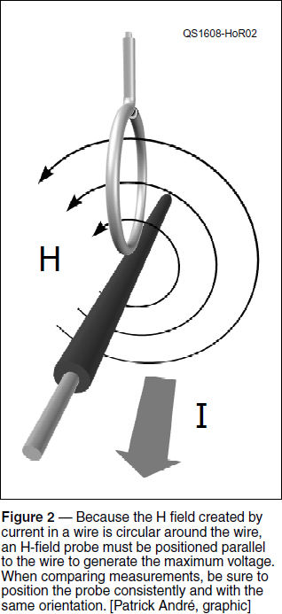
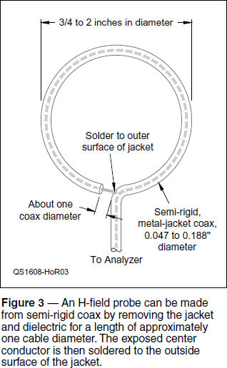

Experiment #163 — E- and H-Field Probes
At the recent IEEE International Microwave Symposium in San Francisco (ims2016.org), dozens of RF professionals checked in at the ARRL display in “University Row.” Their interests were far-ranging and included EMC (electromagnetic compatibility), a topic of concern across the industry — to judge from the number of vendors displaying EMI/RFI-related products. One such visitor was Ken Wyatt, WA6TTY. (Ken is co-author of the new ARRL RFI Pocket Guide, written with ARRL Lab staffer, Mike Gruber, W1MG.1)
Ken — an EMC consultant — handed me a complimentary copy of the Interference Technology 2016 EMC Directory & Design Guide, which also contained his article, “Assembling a Low-Cost EMI Troubleshooting Kit — Part 1 [Radiated Emissions].”2 Ken’s approach typified the mix of commercial and self-built equipment and tools in every ham shack, including some nice-looking and easy-to-make probes for use with a spectrum analyzer, inspiring this month’s column.
Probing Questions
Most hams are familiar with the test probes used with oscilloscopes. They present a high impedance (typically about 10 MΩ) to the circuit under test to prevent loading it and changing the voltage. The probes in Ken’s article, however, are E-field probes and H-field probes. Referred to as near field probes, they pick up the electric and magnetic field components of electromagnetic (EM) signals, respectively, without directly contacting the circuit at all, and are used with a spectrum analyzer to “sniff” for sources of radiated EMI. A selection of probes made by Ken is shown in Figure 1.

An E-field probe (see the upper right probe in the figure) is the easiest to understand. It consists of a short length of wire at the end of a cable — essentially a short stub antenna. You can make one yourself from coaxial cable by stripping away a bit of the shield at one end — Ken recommends leaving about 1⁄4 inch — and insulating it so it won’t come into contact with a live circuit while being used. You can use semi-rigid miniature cable or flexible cable as shown in the figure.
An E-field probe picks up voltage differences between the outside of the probe cable shield and the tip of the probe. Because the probe shield is generally at a relatively consistent voltage, moving the E-field probe around allows you to see changes in the electric field. Without a strict calibration and controlled use, the probe doesn’t provide a measure of the absolute field strength, just changes from place to place or before and after a circuit change. The probe’s sensitivity also changes with frequency due to the changing electrical dimensions of the probe and of the cable’s outer surface. Even with these variations, the E-field probe is a good way to detect and evaluate changes in an electric field, such as around a switching transistor in a switch-mode power supply.
The magnetic or H-field probe (at center and lower left in the figure) is a bit more interesting in both operation and construction. Figure 2 illustrates the probe’s basic function, and Figure 3 shows how the probe is constructed. Semi-rigid 50-Ω coax, such as the PTFE-insulated, 0.047-inch dia- meter PE-SR047AL from Pasternack (www.pasternack.com) makes a sturdy probe. (Connector-terminated semi-rigid coax is often available as surplus cable assemblies at hamfests and online.)

The voltage (more correctly, the electromotive force as explained in Experiment #1173) generated by the H-field probe is directly proportional to the area enclosed by the loop, the strength of the magnetic field inside the loop, and the rate of change in that field. Because it is current which generates the H field, the generated voltage will be proportional to current, if orientation is consistent from measurement to measurement. Take a careful look at Figure 2 — you’ll note that the probe is held with the plane of the loop parallel to the wire or cable to capture the maximum amount of the circular H field and generate the largest voltage. Larger probes generate more voltage, but are less precise about where the current is, and the resonances of shielded versions are at lower frequencies.
The H-field probe can be constructed from unshielded wire, as well, soldering the free end of the wire to the analyzer cable’s shield at a connector or some other convenient arrangement. This allows E fields to couple to the H-field probe through capacitance between the probe wire and the circuit generating the E field. This is why the shielded configuration in Figure 3 is usually preferred. The only issue created by the presence of the jacket shield is that a resonance is created by the shorted stub of transmission line, usually in the mid-UHF range depending on loop diameter and cable type. (The alert reader will note that the H-field probe looks like and works the same way as the popular magnetic loop receiving antennas!)

The Host Analyzer
What would a ham use the E- and H-field probes to accomplish and what sort of instrumentation is required to make the measurements? Let’s start with the second question — do you need a spectrum analyzer? That would help, but could be a bit of a budget problem! There are several options.
If you have a digital scope, you might want to check the manual to see if there is an “FFT,” or Fast Fourier Transform, option installed. This function converts a sampled time domain waveform into a spectrum analyzer-style frequency domain display of amplitude versus frequency. (You can read about FFTs in your scope manual, online, or in The ARRL Handbook’s chapter on DSP.)
New instruments such as the Rigol DSA815 or Siglent SSA3000X are in the $1200 – 1500 range and the USB-based Triarchy Technologies TSA6G1, which uses a host PC for display and control functions, costs a bit over $600. An inexpensive wide-band SDR such as the AirSpy SDR ($200 from www.airspy.com) with Spectrum Spy software can also act as a spectrum analyzer.
With analyzers no longer the expensive, fragile instruments they once were, used analyzers are available for a few hundred dollars, and your club may have a member with an analyzer you can borrow.
Finally, if you are dealing with single signals, such as an interfering carrier, you can use your receiver as a “tunable analyzer.” Because you are basically looking only for changes in signal level, the receiver’s S meter can provide the amplitude value and the tuning dial gives you frequency.
Using the Probes
Here are two common ham radio uses for E- and H-field probes in ham radio. The first is looking for RF “hot spots” using the E-field probe. A high E-field at the end of an unconnected cable or on an equipment enclosure can couple to adjacent equipment and cables through stray capacitance. Inside a piece of equipment, E-field hot spots can couple signals between parts of a circuit you’d rather stay isolated. It’s also common to use the E-field probe simply to “sniff” for RF around a piece of equipment suspected of causing or receiving RFI. Once you have the hot spot identified, you can try different solutions to the problem.
The H-field probe is good at finding RF current to diagnose RFI being radiated by equipment and RFI being received by equipment. Using the H-field probe to make A/B or “better or worse” measurements helps you tell whether your fixes are helping, hurting, or missing the mark completely!
For example, you might have a cable picking up your transmitted signal and causing RF feedback in an audio circuit or getting into your living room entertainment center. Armed with your ferrite EMI suppressor cores, you can first locate the problem cable, measure relative current levels with the H-field probe, put on a ferrite core, and re-measure (with the probe oriented just the same as for the first measurement) to see if the current has been affected. This greatly reduces the “Well, let’s try another core!” guessing game, saving time and money.
Notes
1ARRL Item no. 5008, available at www.arrl.org/shop.
2Interference Technology, 2016 EMC Directory & Design Guide, page 70 – 78. Copies are available at www.interferencetechnology.com.
3All previous Hands-On Radio experiments are available to ARRL members at www.arrl.org/hands-on-radio.